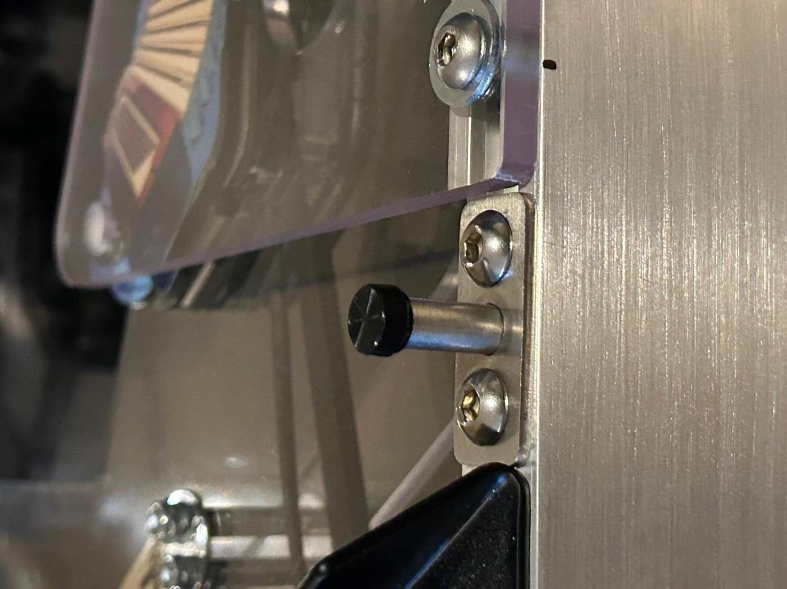
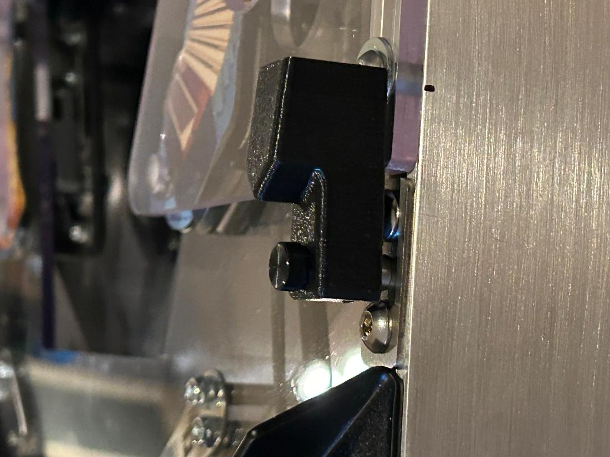

WAMONH Ball Guard
The WAMONH ball guard is the pointy black plastic piece mounted to a metal bracket where the Weird Al crossover wireform attaches to the right-hand rail. Its shape prevents balls from getting stuck there.
When installing Portal Extended, the WAMONH ball guard must be relocated. Multimorphic suggests removing it. If you follow their advice, store it in a safe place so it does not get lost.
However, if you want to keep the guard installed, there is a workaround:
- Temporarily unscrew and remove the black plastic ball guard from its bracket because it would prevent Portal Extended from seating properly.
- Slide the metal bracket forward all the way to the apron.
- Install Portal Extended. The bracket fits snugly between the apron and the front of Portal Extended.

- Reinstall the ball guard with its bottom resting on the Portal Extended washer and screw.
- Tighten the black screw to secure the ball guard in place.
